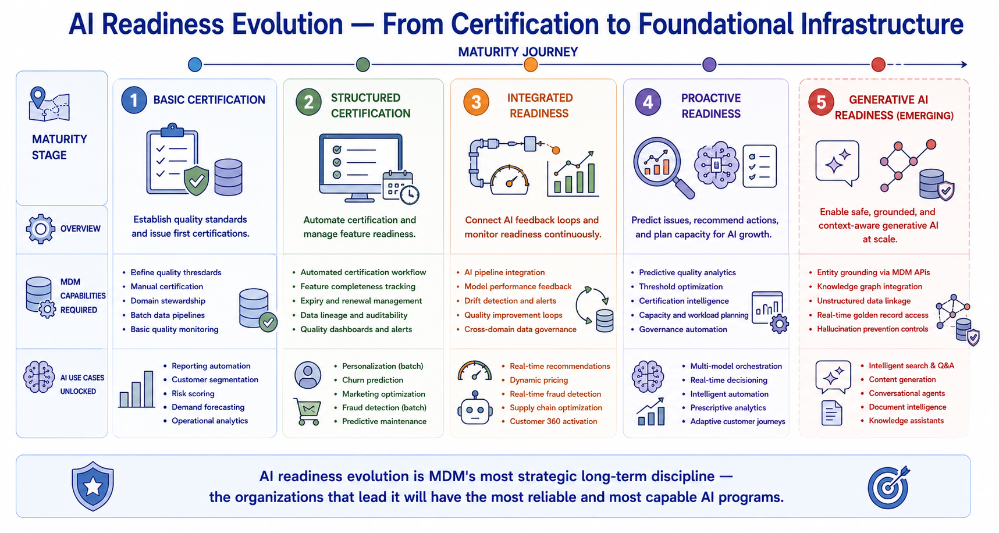

AI Readiness and Trusted Data
Module support notes
AI Readiness as a Moving Target
AI readiness is not a state that an MDM program achieves and maintains — it is a moving target that advances as the organization's AI ambitions grow. A program that achieves AI readiness for a portfolio of predictive models may find that it is not ready for the data governance requirements of large language model grounding, real-time AI inference at scale, or multi-agent AI systems that draw on multiple entity types simultaneously.
MDM programs that treat AI readiness as a one-time certification milestone rather than a continuously evolving standard consistently find themselves behind their organization's AI program — delivering governance that was designed for the AI capabilities of two years ago rather than the AI capabilities being deployed today.
Warning
AI readiness achieved for last year's AI program is not AI readiness for this year's. The data governance requirements for predictive analytics, large language model grounding, real-time inference, and multi-agent systems are meaningfully different from each other. An MDM program that doesn't review its AI readiness standards against the organization's current and planned AI capabilities at least annually will progressively fall behind the AI program it is meant to support.

Generative AI and the Trusted Data Imperative
Generative AI has raised the floor on data governance requirements in ways that have surprised many organizations. For predictive AI, poor data quality produces inaccurate predictions that can often be detected through performance monitoring. For generative AI, poor data quality produces confidently stated incorrect information — hallucinations grounded in bad entity data that the model presents as factual without qualification.
MDM's role in generative AI readiness is specifically to provide the entity resolution, disambiguation, and provenance metadata that allows grounding systems to give language models accurate, trustworthy context about real-world entities. Organizations that have invested in strong MDM governance find that their generative AI programs can be grounded in trusted entity data, significantly reducing hallucination rates and improving response reliability.
Note
Generative AI grounded in governed MDM data is more reliable than generative AI grounded in raw source system data — because MDM provides resolved, disambiguated entity context that raw data cannot. When a customer service AI assistant needs to answer a question about a specific customer's account, the quality of that answer depends directly on the quality of the entity resolution that connects all of that customer's records to a single, accurate golden record.

An AI-mature MDM program is one that continuously evolves its readiness standards alongside the AI capabilities it supports — anticipating the next generation of AI requirements before they arrive.
